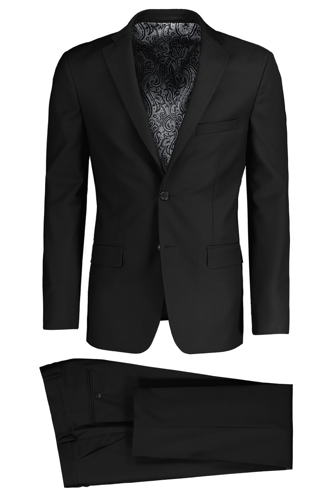
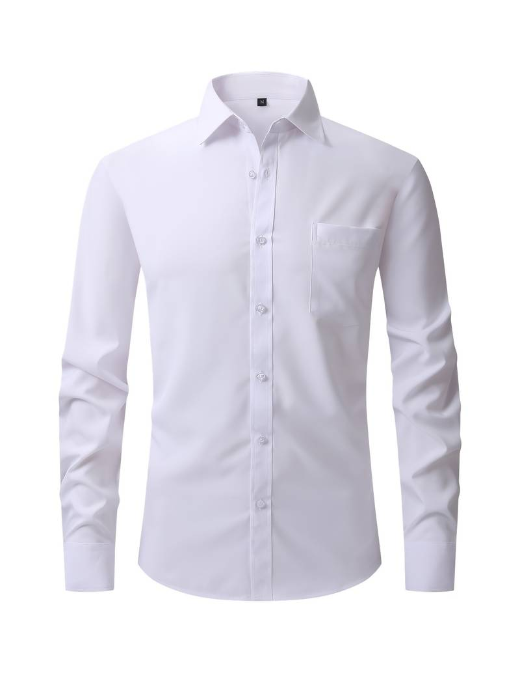
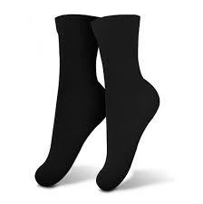
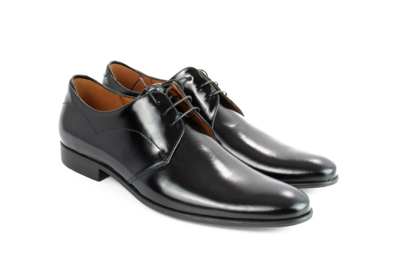

Strój uczniowski w Śląskich Technicznych Zakładach Naukowych
Czarny garnitur
Czarny to jeden z najbardziej reprezentacyjnych kolorów. Do tego nawiązuje on do wydobywanego na terenie Śląska węgla kamiennego, co ma za zadanie oddać hołd górniczej historii tego regionu
Biała koszula
Uczniowie naszej szkoły powinni wyglądać przede wszystkim schludnie. Zapewni im to biała koszula, która wymaga odpowiedniej dbałości o czystość.
Czerwony krawat
Czerwony kolor wyróżnia się na tle pozostałych, a do tego może być postrzegany jako symbol surówki z której w śląskich hutach wytapiano różne metalowe przedmioty. Czerwony to także kolor herbu naszej szkoły.
Czarne skarpety
Do czarnego garnituru najlepiej pasują czarne skarpety.
Czarne buty garniturowe
Czarne buty podkreślą wygląd całego stroju i nadają mu elegancji.